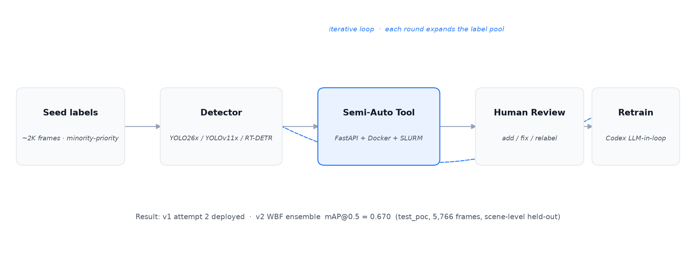
반자동 라벨링 도구의 전체 작업 흐름입니다. ① 모델이 객체와 마스크를 미리 생성하고(Pre-annotate), ② 작업자가 누락·오분류·경계 오류를 검수하고 수정하며(Human Review & Fix), ③ 확정한 라벨을 데이터셋에 반영해 SLURM 학습 작업으로 연결합니다(Apply & Retrain). Codex는 학습·실험 코드를 정리하고 반복 실행하는 개발 흐름에 활용했습니다.
01 · Problem Definition — 희소 객체와 데이터 구축 병목
건설현장 CCTV에는 작업자와 여러 종류의 중장비가 함께 등장하지만, 펌프카·레미콘 운반차(RMC)·덤프트럭처럼 등장 빈도가 낮은 객체는 학습 데이터가 충분하지 않았습니다. 전체 정확도만 보면 문제가 작아 보이더라도, 실제 현장에서 중요한 소수 클래스는 놓치거나 다른 객체로 잘못 분류하는 경우가 있었습니다.
이 문제를 모델 구조만 바꿔 해결하기는 어렵다고 판단했습니다. 먼저 적은 수의 초기 라벨로 학습을 시작하고, 모델이 놓치기 쉬운 장면을 다시 검수해 데이터셋에 추가할 수 있어야 했습니다. 이를 위해 SAM2를 활용한 반자동 라벨링 도구를 직접 구현하고, 검수·수정·재학습이 이어지는 데이터 구축 과정을 만들었습니다.
02 · Data Engineering — 도메인 데이터 구축
소량의 초기 라벨만으로도 자동 라벨을 생성하고, 모델이 취약한 장면을 다시 검수해 데이터셋을 확장할 수 있는 도구를 만드는 것이 첫 번째 목표였습니다. 이후 검수된 데이터로 모델을 반복 학습하고, 별도로 확보한 CCTV 영상에서 성능을 확인한 뒤 실제 라벨링 업무에 연결하는 것을 목표로 삼았습니다.
초기 라벨링 도구와 데이터셋 구축
선행 CCTV 라벨링 경험에서 도메인 특화 학습으로
이전 프로젝트에서는 서로 다른 두 가지 자동 라벨링 접근을 다뤘습니다. 탑다운 엘리베이터 CCTV 프로젝트에서는 YOLO 기반 검출 결과 중 confidence가 0.7 이하인 예측을 검수 후보로 선별하고, 작업자의 수정 라벨을 다음 학습에 반영하는 Active Learning 루프를 구현했습니다. 별도의 Zero-Training Image Auto-Labeling 프로젝트에서는 GPT-4o-mini와 SAM을 결합해 별도 모델 학습 없이 이미지 객체의 분류와 마스크 생성을 수행하는 도구를 구현했습니다.
건설현장 CCTV는 탑다운·원거리 시점, 작은 객체 크기, 가림과 배경 복잡도 등 도메인 조건이 달랐습니다. Zero-shot VLM 기반 자동 라벨링만으로는 중장비 종류와 경계를 안정적으로 구분하기 어려웠고, 이미지 전체를 반복해서 멀티모달 모델에 전달하면 처리 시간과 입력 토큰 비용도 커졌습니다. 따라서 기존 Active Learning의 데이터 피드백 구조를 가져오되, 검출 모델 자체는 건설현장 영상으로 파인튜닝하는 도메인 특화 접근을 선택했습니다.
즉, 이 프로젝트의 핵심은 이전 탑다운 CCTV 프로젝트에서 구현한 검수·재학습 루프를 건설현장 도메인에 맞게 확장하고, Zero-shot 자동 라벨링의 범용성만으로 해결하기 어려운 데이터 분포 차이를 현장 데이터로 보완한 것입니다. 초기 데이터셋 구축 → 검출 모델 학습 → 취약 환경 분석 → 추가 데이터 수집·라벨링 → 모델 재학습을 반복하며 건설현장 CCTV에 맞는 데이터와 모델을 개선했습니다. 특히 안전사고로 이어질 수 있는 객체를 놓치는 미검출(False Negative)을 우선 확인하고, 어떤 촬영 조건에서 누락이 발생하는지 장면별로 비교했습니다.
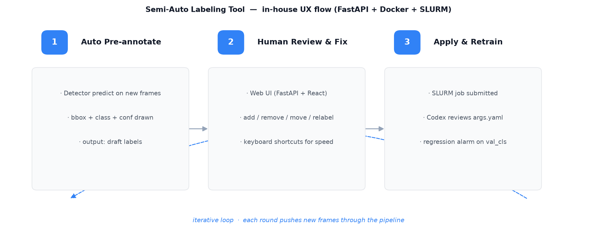
반자동 라벨링 도구의 사용자 흐름입니다. 초기 라벨을 바탕으로 모델이 객체와 마스크를 미리 생성하면, 작업자가 누락·오분류·경계 오류를 수정하고 확정한 라벨을 다음 학습에 반영합니다. 이후 모델이 취약한 장면을 다시 검수 후보로 등록해 데이터셋을 반복적으로 확장합니다.
영상 단위 데이터 분리와 평가 기준 재설계
초기 라벨링 도구를 만든 뒤에는 모델 실험을 반복할 수 있도록 데이터와 평가 절차도 함께 정비했습니다. 모델 후보를 비교하기 전에 같은 CCTV 영상에서 나온 프레임이 학습과 평가에 동시에 들어가지 않도록 분할 기준을 바꿨습니다.
프레임 단위로 무작위 분할하면 같은 영상의 10초와 10.1초 프레임이 학습 데이터와 평가 데이터에 나뉘어 들어갈 수 있습니다. 카메라 위치·조명·배경·객체 배치가 거의 같은 장면을 모델이 학습 중 이미 보게 되므로, 처음 보는 영상에서도 잘 작동하는 것처럼 점수가 부풀려질 수 있습니다. 실제로 기존 프레임 분할에서는 약 95% mAP가 나왔지만, 영상 장면 전체를 학습에서 제외하는 방식으로 다시 평가하자 0.4~0.6 수준으로 낮아졌습니다. 이 차이를 확인한 뒤 영상 단위로 학습·검증·최종 평가 데이터를 분리했습니다.
검출 목적에 맞춘 클래스 정리
클래스도 실제 검출 목적에 맞게 정리했습니다. 기존 12개 클래스 중 signalman은 별도 객체라기보다 작업자(person)의 속성에 가까워 person으로 통합했고, check는 물체 종류가 아니라 검출 결과를 추가 확인해야 하는 상태이므로 검출 클래스에서 분리했습니다. 그 결과 객체 검출은 10개 클래스로 단순화하고, 애매한 사례는 후처리와 검수 단계에서 다루도록 했습니다.
03 · Model Development — 학습·비교·오류 분석
모델 비교와 예측 결합
평가 기준과 클래스 구성을 정리한 뒤, 모델 종류·입력 해상도·데이터 확장 방식을 바꿔가며 9개 실험을 진행했습니다. 단일 모델의 성능만으로는 클래스별 미검출을 충분히 줄이기 어려워, 서로 다른 모델의 예측을 결합하는 앙상블도 함께 검토했습니다.
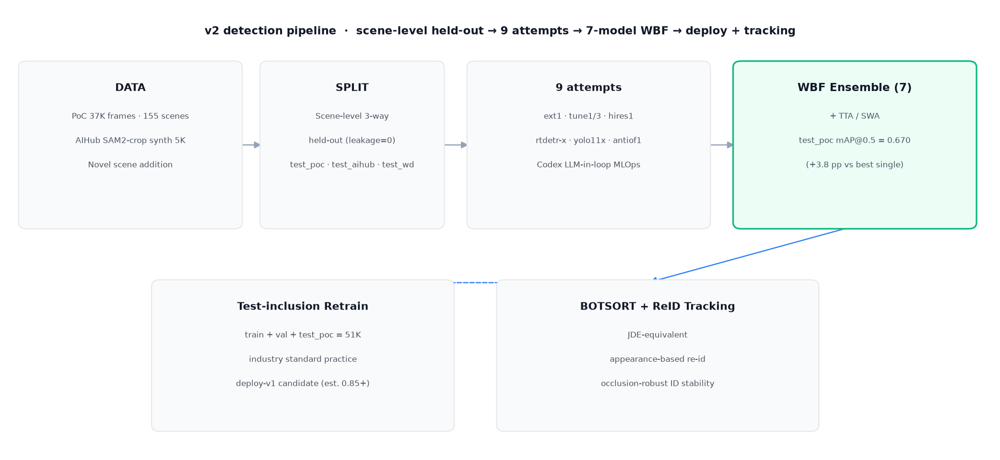
검출 모델 개선 파이프라인입니다. 먼저 서로 다른 CCTV 영상을 학습과 평가에 나눠 넣고, 9개 설정·모델 조합을 같은 평가 데이터로 비교했습니다. 이후 개별 모델의 예측을 7개 모델 가중 박스 융합(WBF)으로 결합해 가장 좋은 단일 모델보다 mAP@0.5를 3.8%p 높였습니다. 마지막으로 검출 결과에 객체 추적을 연결해 영상 안에서 같은 장비가 같은 ID로 이어지는지 확인했습니다.
모델 선택에서는 더 큰 모델이나 높은 입력 해상도만을 기준으로 삼지 않았습니다. YOLO26x·YOLO11x와 RT-DETR, 입력 해상도 1280·1536, 데이터 확장과 학습 설정을 바꾼 9개 실험을 같은 평가 영상에서 비교했습니다. 소수 클래스 성능, 과적합 징후, 전체 검출 성능과 추론 속도를 함께 고려했고, 단일 모델만으로 놓치는 사례를 보완하기 위해 예측 결과가 서로 다른 모델들을 가중 박스 융합(WBF)으로 결합했습니다.
외부 데이터의 활용과 실패 원인 분석
외부 데이터는 양을 늘리는 것만으로 성능을 높이지 못했습니다. 예를 들어 AIHub 자료에는 굴착기만 라벨링되어 있는데 같은 이미지에 작업자가 함께 등장하면, 라벨이 없는 작업자 영역이 배경으로 학습되어 person 검출 성능이 떨어질 수 있었습니다. 이 문제를 줄이기 위해 SAM2로 굴착기 영역만 분리하고, 실제 CCTV 배경에 합성해 객체 외형은 활용하되 배경 도메인 차이는 줄였습니다.
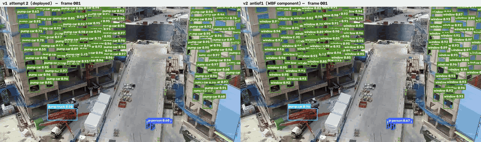
오류 수정 사례입니다. 기존 모델은 건물 창문을 펌프카로 잘못 분류했습니다. 데이터와 학습 설정을 조정한 후속 모델은 같은 영역을 창문으로 분류해 해당 혼동을 줄였습니다.
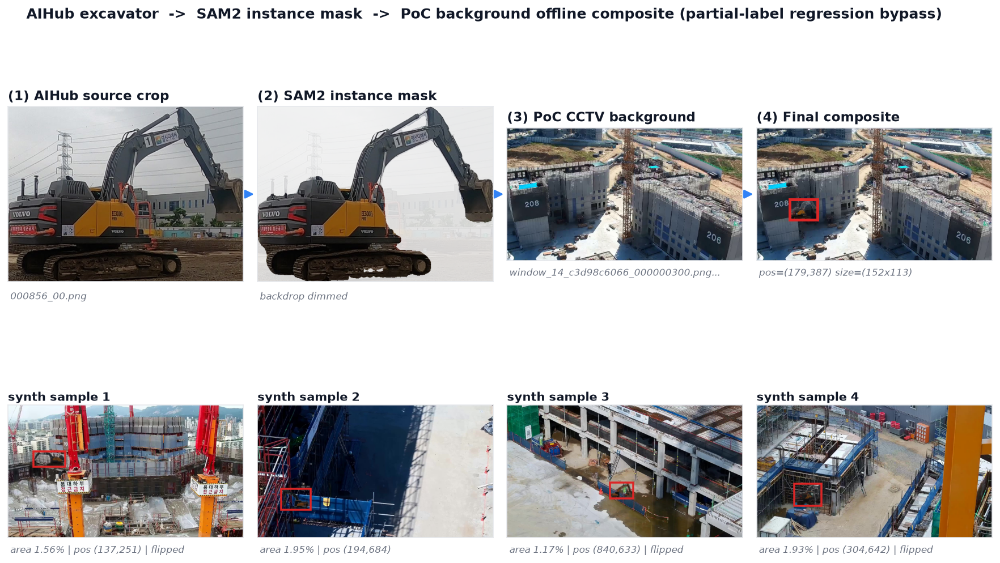
희소 객체 데이터 보강 예시입니다. 외부 데이터에서 굴착기 영역만 SAM2 마스크로 분리한 뒤, 실제 CCTV 배경에 합성해 객체의 외형 정보는 활용하면서 배경 도메인 차이는 줄였습니다.
모델 평가 결과와 취약 장면 분석
이 프로젝트에는 평가 목적이 다른 세 가지 모델 단계가 있습니다. 아래 결과를 읽을 때는 각 모델이 어떤 데이터로 평가됐는지 함께 봐야 합니다.
초기 개선을 마치고 라벨링 도구에 연결한 모델입니다. 별도로 확보한 PoC 영상에서 클래스별 F1을 확인해 펌프카·RMC처럼 놓치기 쉬운 객체가 얼마나 개선됐는지 살폈습니다.
모델 구조와 학습 방법을 비교하기 위한 실험 단계입니다. 학습에 넣지 않은 CCTV 35개 영상(5,766프레임)을 평가에 사용하고, IoU 0.5 기준 mAP로 모델 전체의 검출 성능을 비교했습니다.
후속 실험으로 설정을 고른 뒤, 실제 운영에 활용할 수 있도록 확보한 데이터를 모두 넣어 다시 학습한 모델입니다. 이때의 검증 점수는 학습에 사용한 데이터가 포함되므로, 처음 보는 영상에 대한 일반화 성능으로 해석하지 않습니다.
1차 운영 모델에서는 별도 PoC 영상에서 펌프카 F1이 0.00에서 0.57로, RMC F1이 0.20에서 0.72로 개선됐습니다. 작업자(person)도 0.50에서 0.75로 높아졌지만, 창문(window)은 0.84에서 0.72로 낮아져 클래스 간 균형을 다시 조정해야 한다는 점을 확인했습니다.
후속 실험에서는 학습에 사용하지 않은 CCTV 35개 영상·5,766프레임을 기준으로 모델을 비교했습니다. 이 평가에서 7개 모델의 예측을 결합한 결과 mAP@0.5 0.670을 기록했고, 가장 성능이 높았던 단일 모델(0.632)보다 3.8%p 높았습니다. 이는 해당 평가 영상에서 여러 모델의 예측을 결합하는 것이 추가 이득을 줬다는 의미입니다.
1차 운영 모델의 가중치는 사내 반자동 라벨링 도구의 자동 예측 단계에 연결해 실제 검수 업무에 사용했습니다.
FN 중심 취약 환경 분석 — 갤러리와 정량 비교
검출 성능을 확인할 때는 False Positive보다 실제 객체를 놓치는 False Negative(FN)를 더 치명적인 실패로 판단했습니다. 안전 모니터링에서는 객체가 존재하는데 검출하지 못하는 상황이 위험 요소를 인지하지 못하는 결과로 이어질 수 있기 때문입니다. 이에 미검출 사례를 갤러리로 모아 객체 크기, 원거리 촬영, 가림 등 실패가 반복되는 환경을 분류하고, Model-Compare 대시보드의 클래스별 Precision·Recall·F1 및 모델별 예측 결과와 함께 비교했습니다.
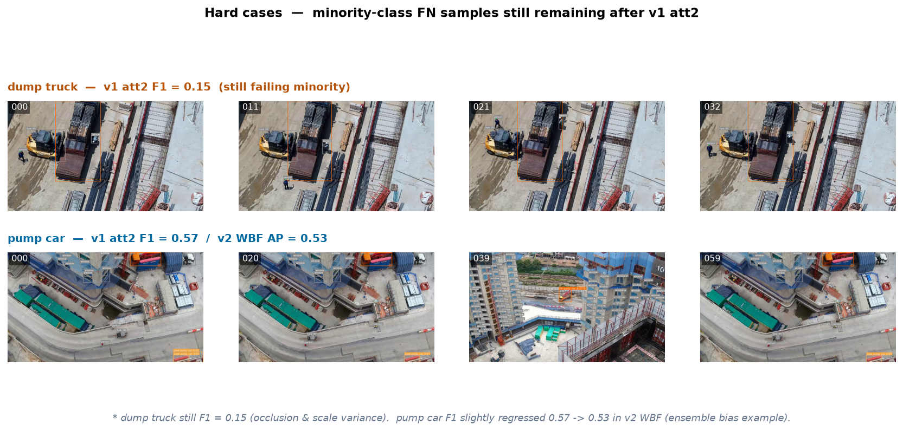
FN 취약 장면 갤러리입니다. 덤프트럭은 초기 운영 모델에서 F1 0.15로 낮았고, 작은 크기나 가림이 있는 장면에서 누락이 반복됐습니다. 펌프카는 후속 모델 결합 과정에서 F1이 0.57에서 0.53으로 소폭 낮아졌습니다. 전체 평균만으로 개선 여부를 판단하지 않고, 이처럼 놓치기 쉬운 클래스와 촬영 조건을 별도로 확인했습니다.
분류한 취약 환경을 중심으로 추가 CCTV 장면을 확보하고 라벨을 보강해 후속 학습에 반영했습니다. 갤러리는 실패가 발생한 환경을 정성적으로 확인하는 용도이고, Model-Compare 및 전체 실험 대시보드는 동일한 평가 기준에서 모델별 지표와 예측을 정량 비교하는 용도로 사용했습니다.
후속 모델의 세부 실험 기록 펼쳐보기
실험 기록 · 데이터 구성과 모델 비교
1차 운영 모델을 도구에 연결한 뒤, 후속 실험에서는 평가 데이터의 독립성을 먼저 확보하고 데이터 구성·모델 종류·학습 설정을 같은 기준으로 비교했습니다. 총 9개 실험을 수행한 뒤 예측 특성이 다른 7개 모델을 결합하고, 객체 추적까지 연결했습니다.
1. 정직한 평가 확립
- 기존에 서로 다른 출처가 섞여 있던 평가 데이터 5,916장을 CCTV 영상 35개·5,766프레임, AIHub 110장, 기타 40장으로 나눠 CCTV 환경만의 성능을 따로 확인했습니다.
- 이전 프레임 무작위 분할에서는 약 95% mAP가 나왔지만, 같은 CCTV 영상의 인접 프레임이 학습과 평가에 함께 들어간 영향이 컸습니다. 학습에서 제외한 영상으로 다시 평가하자 mAP는 0.4~0.6 수준으로 내려갔고, 이 수치를 처음 보는 장면에 대한 성능 판단 기준으로 삼았습니다.
2. AIHub partial-label 회귀 진단
- 후속 실험 1에서 외부 데이터를 혼합해 학습한 결과, person 성능은 3%p, fork lift 성능은 7%p 하락했습니다.
- 원인은 AIHub 데이터의 237개 라벨이 excavator에만 부여되어 있었다는 점입니다. 라벨이 없는 person 객체가 학습 과정에서 background로 처리되면서 person 검출을 억제했습니다.
- 이에 SAM2 마스크 기반 crop 합성 파이프라인을 적용했습니다. 중장비의 외형은 합성 데이터로 보강하되 배경은 PoC CCTV 장면을 유지했으며,
pre_extracted_bg에서 오염된 이미지 77장 중 53장을 확인해 학습 대상에서 제외했습니다.
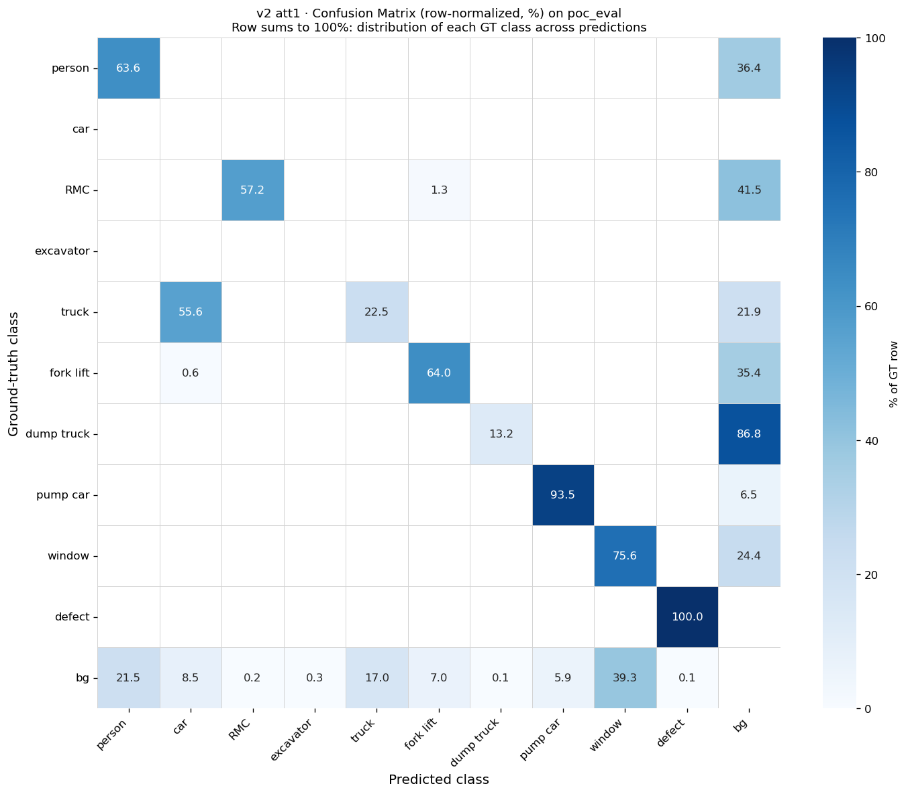
후속 실험 1의 혼동 행렬입니다. 별도 PoC 평가 영상에서 person의 36.4%가 background로 누락됐고, dump truck은 86.8%가 background로 오분류됐습니다. 이 결과를 부분 라벨로 인한 학습 편향의 근거로 보고 SAM2 마스크 기반 합성 데이터를 추가했습니다.
SAM2 기반 중장비 합성 데이터 생성 과정입니다. 상단은 AIHub 원본에서 SAM2 마스크로 굴착기를 분리한 뒤 PoC CCTV 배경의 지정 위치에 합성한 결과이며, 빨간 상자는 삽입 영역을 나타냅니다. 하단은 생성한 합성 이미지 100장 중 크기 비율과 좌우 반전을 달리한 사례입니다. 중장비의 외형 정보는 보강하되 배경과 장면 특성은 PoC 영상에 맞추는 방식으로 데이터 도메인을 관리했습니다.
3. 9 attempt 통제 실험 + LLM-in-the-loop
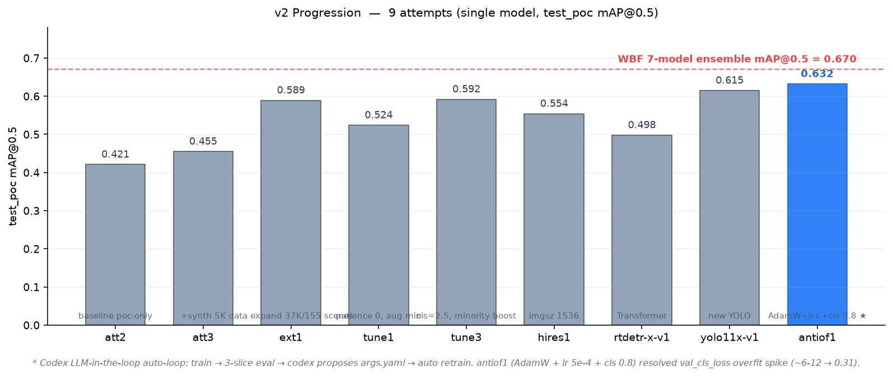
후속 모델 9회 실험 결과입니다. 기준 모델의 mAP@0.5는 0.421이었으며, 실험을 거쳐 최고 단일 모델은 0.632를 기록했습니다. 7개 모델의 Weighted Boxes Fusion(WBF) 앙상블은 0.670으로, 최고 단일 모델보다 3.8%p 높은 결과를 보였습니다.
학습 제외 CCTV 평가 영상: 학습에 쓰지 않은 35개 CCTV 비디오 · 5,766 프레임. 씬 단위 학습에서 제외한 영상 = 같은 비디오 프레임이 train과 test에 절대 섞이지 않음 (프레임 단위 split의 부풀림 방지). mAP@0.5 = IoU 0.5 기준 클래스별 Average Precision 평균.
- codex JSON 검토 기반 auto-loop — 학습 완료 → 3-슬라이스 평가 → codex가 args.yaml 파라미터 제안 → 자동 재학습 → 반복 (regression alarm 자동 중단).
- overfitting 원인 규명: val_cls_loss 폭증 (3~4×) = classification overconfidence 과적합. AdamW + lr 0.0005 + cls 가중치 0.8로 val_cls 6~12 → 0.31로 감쇠 확인 (최고 단일 모델).
4. WBF 앙상블 (7 모델)
5. Test-inclusion 재학습 (배포 최종)
- 배포 카메라 = 학습 도메인이므로 학습에서 제외한 영상 검증 후 train + val + 학습 제외 CCTV 평가 영상 모두 편입 재학습 (all-data 51K frames).
- 산업 표준 pipeline (Kaggle 우승 · Waymo · Amazon SageMaker AutoML): 개발 시 학습에서 제외한 영상으로 방법 검증 → 배포용은 all data 재학습.
- 1차 운영 모델 배포본 · 최고 단일 모델 승자 설정 (AdamW + lr↓ + cls 0.8) 유지 · 60/60 epoch · 40.4h · 3-GPU SLURM. 학습 데이터가 포함된 검증 점수는 mAP50 0.9932 · mAP50-95 0.9447 (학습에 포함된 데이터의 점수이므로 일반화 성능과 별개). TRT FP16 export 시 mAP retention 100.00% · loss 0.00 pp — 최고 단일 모델(99.18%)보다 우수.
6. 가려진 객체의 ID를 이어주는 추적 기능
- BoT-SORT로 프레임 사이 객체의 위치와 움직임을 연결하고, ReID(외형 재식별)로 가려졌다가 다시 나타난 객체가 이전 객체인지 확인하도록 구성했습니다.
- 단순 위치 추적만으로는 긴 가림 이후 ID가 바뀔 수 있으므로, 외형 특징을 함께 비교해 가림 이후에도 같은 객체 ID를 이어주는 방식을 선택했습니다.
- 실측 데모 (manual_css411202z045, 451 frames): dump truck·fork lift 2개 유효 ID 전 구간 안정 유지, max_conf 0.97~0.98.
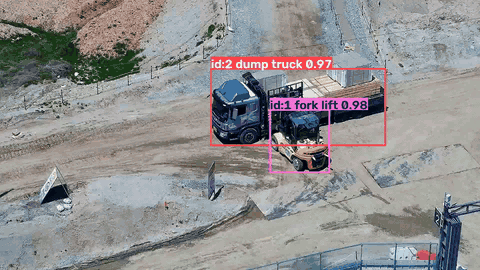
BoT-SORT와 ReID를 결합한 추적 결과입니다. manual_css411202z045 영상(15초, 451프레임)에서 지게차(ID 1, 최대 신뢰도 0.98)와 덤프트럭(ID 2, 최대 신뢰도 0.97)의 ID가 전체 구간에서 유지됐습니다. 세 번째 ID는 한 프레임에서만 나타난 오검출로 확인했습니다. 해당 결과는 v4_tracking_demo.py와 botsort_reid.yaml 설정으로 생성했습니다.
7. Deployment Optimization — PyTorch baseline + 5 export runtimes bench (최고 단일 모델, Phase 1)
동일한 YOLO 모델을 PyTorch, ONNX Runtime, TensorRT 등 여러 실행 환경으로 변환해 처리 시간과 정확도 변화를 비교했습니다. TensorRT FP16은 PyTorch 대비 평균 추론 지연을 57.09ms에서 14.66ms로 줄여 약 3.9배 빠르게 처리했고, 학습에 사용하지 않은 CCTV 평가 영상에서 mAP 유지율 99.18%를 기록했습니다. INT8은 속도 이득이 거의 없으면서 정확도 손실이 더 커 FP16을 선택했습니다.
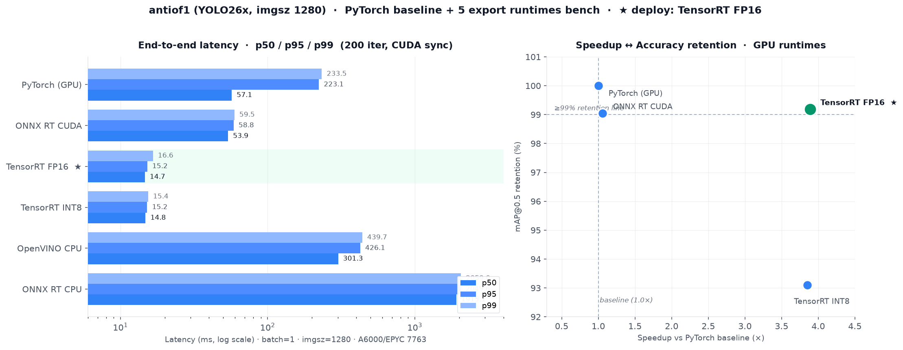
실행 환경별 지연 시간과 정확도 유지율 비교입니다. 왼쪽은 6개 런타임의 p50·p95·p99 지연 시간을 로그 스케일로 비교하고, 오른쪽은 4개 GPU 환경의 속도 향상과 mAP 유지율을 나타냅니다. TensorRT FP16은 정확도 유지율 99% 이상을 유지하면서 약 3.9배의 속도 향상을 기록했습니다.
| runtime | size (MB) | cold (s) | p50 (ms) | p95 (ms) | p99 (ms) | img/s | mAP50 | retention |
|---|---|---|---|---|---|---|---|---|
| PyTorch (GPU) | 113 | 1.88 | 57.09 | 223.08 | 233.53 | 18.27 | 0.6317 | 100.00% |
| ONNX Runtime CUDA | 213 | 2.56 | 53.87 | 58.76 | 59.51 | 18.82 | 0.6256 | 99.04% |
| TensorRT FP16 ★ | 111 | 0.33 | 14.66 | 15.23 | 16.65 | 67.86 | 0.6265 | 99.18% |
| TensorRT INT8 | 95 | 0.23 | 14.81 | 15.20 | 15.43 | 67.04 | 0.5882 | 93.10% |
| OpenVINO CPU | 213 | 0.90 | 301.31 | 426.12 | 439.66 | 2.80 | 0.6256 | 99.04% |
| ONNX Runtime CPU | 213 | 3.02 | 1915.07 | 2049.58 | 2059.02 | 0.59 | — | — |
측정 환경은 A6000, 입력 크기 1280, batch 1이며 전처리·추론·NMS를 포함한 end-to-end 지연 시간을 측정했습니다. INT8 보정에는 학습 제외 CCTV 평가 영상을 사용하지 않고 PoC train/val에서 층화 추출한 600장을 사용했습니다. INT8과 FP16의 지연 시간이 비슷했던 것은 export 그래프의 NMS·TopK·Expand 연산 일부가 FP32 경로로 실행됐기 때문입니다. 30분 동안 60개 구간을 측정한 결과 지연 시간 변화율은 FP16 +2.05%, INT8 −0.18%였습니다.
선택: TensorRT FP16. 3.9× 처리량·꼬리 지연 안정성(p99 16.65 ms) 확보 시 정확도 손실 <1 pp. INT8은 동일 속도에 4.35 pp 정확도 손실 — 현재 export 구성에선 추가 이득 없음. OpenVINO CPU는 ONNX Runtime CPU 대비 6.3× 빠름 (Intel Xeon 코어에서 저비용 대안 후보).
스택 & 재현: TensorRT 10.7.0(cu12) · ONNX Runtime 1.20.2 · OpenVINO 2026.3 · Ultralytics 8.4.102 · torch 2.11+cu128 · Ubuntu 22.04.
상세 파이프라인·명령·이슈해결: notes/16_deployment_bench.md · notes/15_export_pipeline_plan.md.
Export/bench/val 스크립트: scripts/v5_export_pipeline.py, scripts/v5_build_calib_split.py, scripts/v5_bench_all.py, scripts/v5_val_all.py.
8. 라벨링 툴 pre-annotate 통합 — Tracking + Rule + Learned Signalman Head
1차 운영 모델 배포 이후 라벨링 툴의 pre-annotate 흐름을 자동화·정밀화. YOLO detection 만으로는 리뷰어가 프레임마다 같은 객체를 반복 편집하고, signalman·check 같은 서브 클래스는 원본 스키마에서 제거된 상태였음. 3-track 통합으로 리뷰 시간 감소 + 서브 클래스 자동 태그 달성.
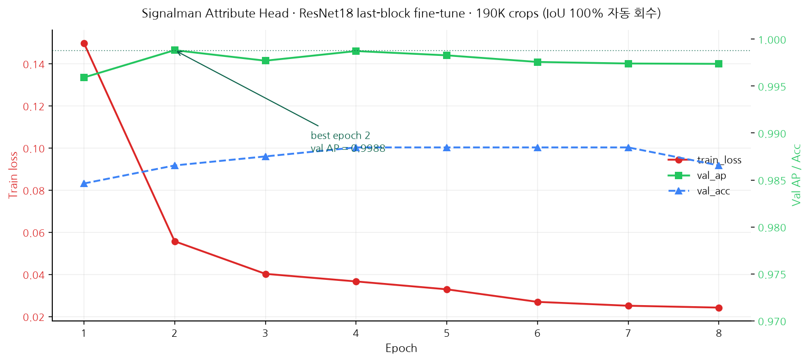
신호수 속성 분류 헤드의 학습 곡선입니다. 2번째 epoch에서 검증 AP 0.9988을 기록했습니다. 별도 수작업 라벨링 대신 기존 신호수 바운딩 박스 34,476개를 person 검출 결과와 IoU 임계값 0.35로 매칭해 crop을 자동 수집했으며, 총 19만 개 crop을 학습에 사용했습니다.
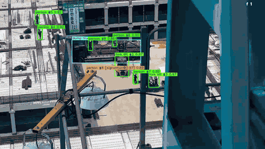
tc02_01 영상의 1차 운영 모델 추적 결과입니다. 신호수·굴착기·트럭을 함께 추적했으며, 15 fps 기준 약 4초를 넘는 가림 이후 person ID가 #12에서 #16으로 바뀌는 현상이 관찰됐습니다. 장시간 가림에서 발생하는 ID 전환은 현재 추적 설정의 한계로 구분하고, track buffer 조정과 Joint Detection and Embedding(JDE) 적용 가능성을 후속 검토 항목으로 남겼습니다.
파이프라인 구조
Multi-attribute head가 12-class 재학습보다 안전한 이유
- 기본 검출 성능 보전 — person 검출은 1차 운영 모델을 유지하고, signalman 여부는 별도의 attribute head가 판정하도록 분리했습니다. 따라서 속성 분류 학습이 실패하더라도 기본 person 검출 경로는 영향을 받지 않습니다.
- 학습 시간과 데이터 라벨링 부담 감소 — Backbone을 고정하고 마지막 블록과 FC 계층만 미세 조정했습니다. 기존 signalman 라벨(cls=8)은 IoU 매칭으로 자동 수집해 별도의 수작업 라벨링을 줄였습니다.
- 12-class 통합 학습에서 발생한 회귀 방지 — 이전에는 signalman 소수 클래스를 함께 학습할 때 person recall도 함께 하락했습니다. 별도의 attribute head를 사용하면 detection과 attribute 분류의 학습 손실을 분리할 수 있어 이러한 성능 저하 위험을 줄일 수 있습니다.
시각 안정화 4단계 반복 (실패 → 원인 → 대응)
| 단계 | 해결한 문제 | 추가 후처리 |
|---|---|---|
| v1 | baseline (tracking + rules) | 없음 |
| v2 | 짧은 detection dropout → bbox 사라짐 | Kalman linear gap-fill (점선 예측 bbox) |
| v3 | bbox jitter · subclass 라벨 flip | EMA smoothing (α=0.35) + majority vote |
| v4 ★ | BoT-SORT ID switch → 새 track = 라벨 리셋 | Cross-track linking (Union-Find, class+time+space+size) → canonicalId 로 통합 재적용 |
각 단계는 이전 버전에서 확인된 오류 유형을 바탕으로 개선했습니다. Kalman 기반 보간은 짧은 검출 누락을 보완하지만, ID switch 이후 새로 생성된 track의 라벨이 초기화되는 문제까지 해결하지는 못했습니다. 이에 후속 버전에서는 시간·위치·크기·클래스 정보를 기준으로 track을 연결하는 cross-track linking을 추가했습니다.
산출물 (재현 가능): app/adapters/yolo_default_tracking.py, app/adapters/botsort_reid.yaml,
scripts/v6_build_signalman_attributes.py, scripts/v6_train_signalman_head.py,
scripts/v7_generate_tracked_overlays.py, notes/17_project_flow_summary.md.
남은 과제: (a) 모든 클래스가 등장하는 라벨링 데이터 확보 후 botsort_reid.yaml 진단 기반 tuning, (b) check 도 learned head 로 승격 (signalman 과 동일 패턴), (c) 라벨링 툴 UI 프론트에 trackId·subclass 렌더링 코드 추가 (지금은 JSON 캐시에만 저장).
상황별 검증 갤러리 — 학습에 사용되지 않은 실제 씬
Slice C (2026-08-23 촬영, 학습 이후) 152 clip + 20260702_jy 프로젝트 unlabeled 111 clip 중 우선순위 18 clip. 3중 검증(label set 매칭 0 · 1차 운영 모델 dataset 매칭 0 · signalman head 학습 대상 아님)으로 zero-shot 배포 성능 확인. 아래 오버레이 프레임은 실제 배포 파이프라인 predict + apply_class_rules + learned signalman head 결과.
오버레이에서 신호수는 person [signalman@prob] 라벨과 주황색 바운딩 박스로 표시합니다. 창문 상태 판정은 confirmed(초록), check(노랑), defect_suspect(빨강)의 세 가지 색상으로 구분했습니다. 추가 시각 자료는 v8c_gallery.html의 미라벨 영상 18개와 gallery_v3.html의 Slice C 영상 152개에 정리했습니다.
04 · Deployment & Iterative Improvement
§5의 예상치 대신 all-data 재학습 60/60 epoch · 40.4h · 3-GPU SLURM 완주 후 실측. 최고 단일 모델 승자 설정(AdamW + lr↓ + cls 0.8) 그대로 유지.
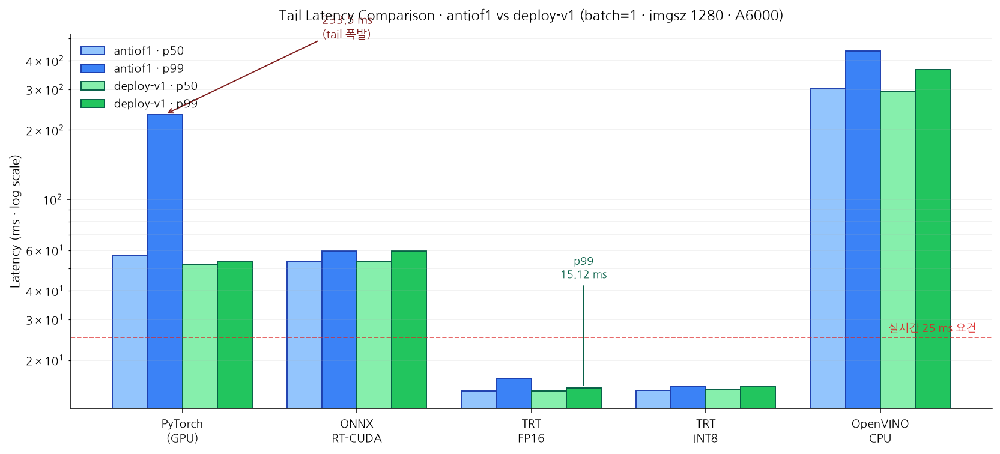
최고 단일 모델과 1차 운영 모델의 tail latency 비교입니다. 동일한 YOLO26x 아키텍처와 입력 크기 1280으로 다시 측정했을 때 PyTorch p99는 233ms에서 53ms로, TensorRT FP16 p99는 16.65ms에서 15.12ms로 감소했습니다. PyTorch 개선에는 배타적 자원 확보 효과가 포함되므로 모델 구조만의 개선으로 해석하지 않았습니다.
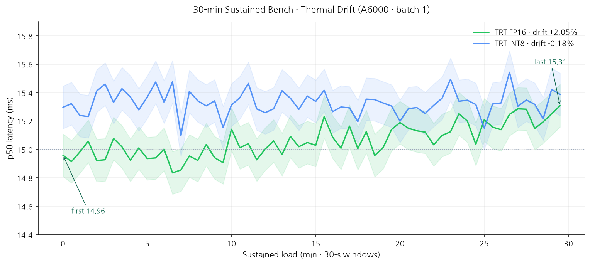
30분 지속 부하에서의 지연 시간 변화입니다. 30초 단위 60개 구간을 측정한 결과 TensorRT FP16은 14.92ms에서 15.23ms로 2.05% 증가했고, INT8은 15.34ms에서 15.32ms로 0.18% 감소했습니다. 이 결과는 해당 측정 구간에서 큰 지연 시간 변동이 나타나지 않았음을 보여주며, 장시간 24시간 운영 안정성을 직접 입증한 결과로 확대 해석하지 않았습니다.
Phase 2 auto-trigger — scripts/v5_phase2_autorun.sh가 train.log의 DONE 마커를 감지해 export → bench → val을 자동 실행 (수작업 개입 0). FP32 3종 (torch/ORT/OpenVINO)이 동일 mAP → numerical stability 확인.
신규 영상 검증 · 학습에 없던 장면에서 추가 확인
§8 정성 갤러리와 별개로, Model-Compare 도구로 정량 검증까지 진행. Slice A는 학습 데이터라 upper bound sanity, Slice C는 학습 종료 후 촬영해 zero-shot 확인.
Slice C는 라벨 부재라 정량 지표는 산출 불가 — 대신 zero-shot 배포 성능을 오버레이 152개로 시각 검증. SLURM 작업 대기 지연에 대응하기 위한 대체 실행 경로 (gpu-107 pending → 컨테이너 GPU 4에서 inference_worker.py 직접 실행 후 metrics/overlays 하드링크 sync).
Additional Experiments · 추가 실험 기록
아래 대시보드에는 초기 운영 모델부터 후속 실험까지의 씬 단위 데이터, 학습 제외 CCTV 평가 영상, 학습 곡선, Signalman attribute head, 오버레이 시각 안정화와 Slice C 결과를 정리했습니다.
05 · Technical Issues & Improvements
- 평가 데이터 누수: 프레임 단위로 데이터를 나누면서 같은 영상의 인접 프레임이 학습과 평가에 함께 들어갔습니다. 평가 결과가 실제 일반화 성능보다 높게 나오는 문제를 확인한 뒤, 영상 단위로 분리하고 학습에 포함되지 않은 CCTV 영상으로 추가 확인했습니다.
- 외부 데이터의 라벨 불일치: AIHub 데이터를 그대로 학습에 넣자 라벨이 없는 객체가 background로 처리되어 person·fork lift 검출에 악영향을 주었습니다. 이후 SAM2로 필요한 객체만 crop하고 PoC CCTV 배경에 합성해, 객체 외형은 활용하되 배경 도메인과 라벨 체계는 유지했습니다.
- 장시간 가림 이후 ID 전환: 60프레임 이상 가려진 사람의 ID가 바뀌는 사례를 확인했습니다. Kalman 보간, EMA 평활화, track linking을 단계적으로 적용해 시각적 흔들림을 줄였으며, 장시간 가림에서 동일 객체를 다시 연결하는 문제는 ReID와 track buffer를 추가로 검토할 예정입니다.
- INT8 변환 시 정확도 저하: all-data 재학습 이후 일부 activation 범위가 달라지면서 INT8 변환 결과의 오차가 크게 증가했습니다. 배포 경로는 정확도 유지가 확인된 TensorRT FP16으로 선택했으며, INT8은 calibration 데이터와 clipping 설정을 다시 검증할 필요가 있습니다.
- 희소 속성의 분리: Signalman처럼 소수 속성은 기본 detection head를 다시 학습하기보다 별도 attribute head로 분리했습니다. 이 구조는 기본 객체 검출을 유지하면서 속성 분류만 독립적으로 수정할 수 있도록 합니다.
- 실험 회귀 관리: 학습 실패나 기존 성능의 하락을 뒤늦게 확인하지 않도록, 로그의 완료 상태와 평가 결과를 연결해 후속 실험 전에 회귀 여부를 확인하도록 구성했습니다.